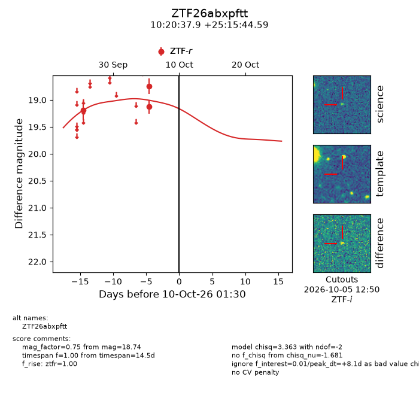
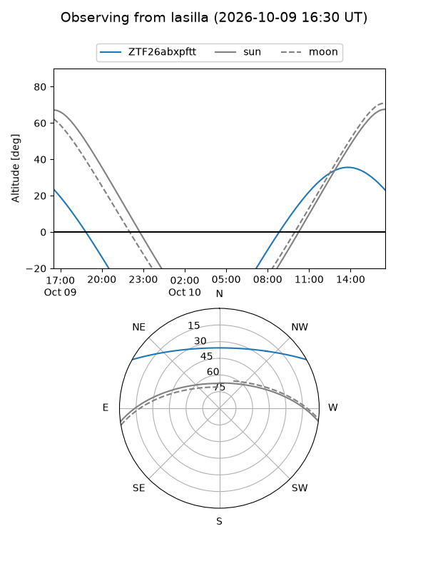
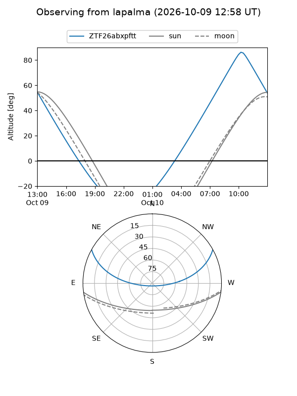
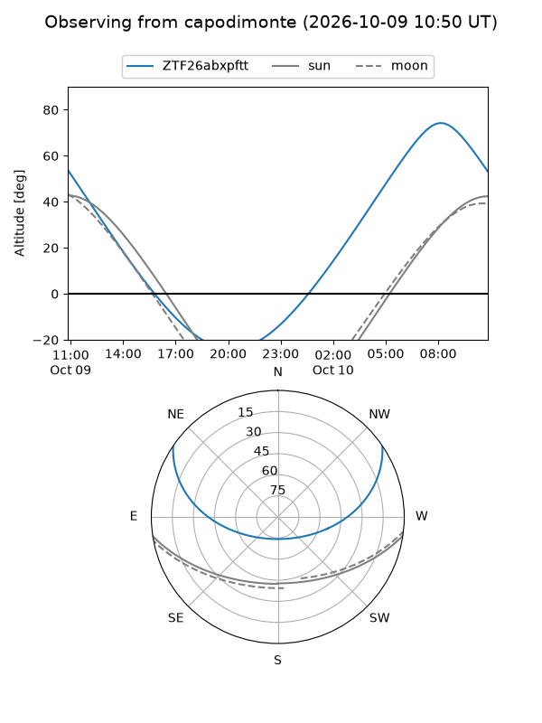
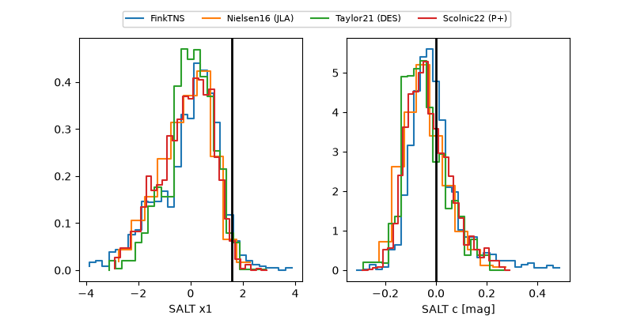

ZTF26abxpftt
Target ZTF26abxpftt at 2026-10-10 13:16
Aliases and brokers:
FINK-ZTF: ztf.fink-portal.org/ZTF26abxpftt
Lasair-ZTF: lasair-ztf.lsst.ac.uk/objects/ZTF26abxpftt
ALeRCE-ZTF: alerce.online/object/ZTF26abxpftt
Direct TNS query: direct search
alt names
ZTF26abxpftt (ztf,fink_ztf)
Coordinates:
equatorial (ra, dec) = 155.1578,+25.26239
equatorial (HMS+DMS) = 10:20:37.88,+25:15:44.59
galactic (l, b) = (207.4024,+56.24462)
Flags:
peak dt: +8.6
Photometry:
last ztfr=18.74
3 ztfr detections
Lightcurve

Visibility



Additional plots
